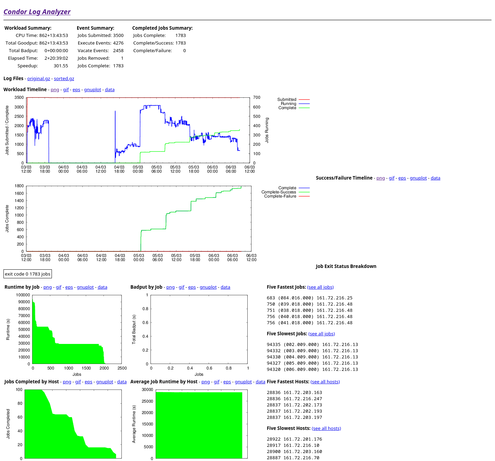

HTCondor@IAC User's Manual
Table of Contents
This documentation, together with example submit files and other material can be found in the HTCondor@IAC repository.
Part of the HTCondor infrastructure at the IAC was financed by the Ministry of Economy and Competitiveness through FEDER funds, code IACA13-3E-2493.
1 Introduction
If you have no experience with HTCondor, we recommend that you contact us before running any job so we can give you a quick introduction (bear in mind that you will be using other users' computers and there are some basic guidelines that you must follow to avoid disturbing them).
1.1 What is HTCondor?
At the IAC we have several Supercomputing resources that allow you to obtain your computational results in much less time and/or work with much more complex problems. One of them is HTCondor, a High Throughput Computing (HTC) system. The underlying idea is quite simple (and powerful): let's use idle machines to perform computations while their owners are away. So, in a nutshell, HTCondor is an application that is installed in our PCs to make it possible to run a large number of yours and others' computations at a time in different machines when they are not being used, achieving a better utilization of our resources. A more detailed overview of HTCondor is available at the official documentation.
1.2 How can HTCondor help me?
HTCondor is very useful when you have an application that has to run a large number of times over different input data. For instance, suppose you have a program that carry out some calculations taking an image file as input. Let's say that the processing time is about one hour per image and you want to process 250 images. Then you can use your own machine and process all images one by one, and wait more than 10 days to get all results, or you can use HTCondor to process each image in different computers and hopefully get all results in one hour, or maybe two or four, but for sure less than 10 days. And HTCondor will do all the work for you: it will copy the input files to the remote machines, execute your program there with different inputs and bring back the results to your machine when they are complete.
1.3 How powerful is HTCondor?
HTCondor calls a slot the unit that executes a job, typically a CPU or a core if the CPU has several of them. Right now we have over 1000 slots that might execute applications submitted via HTCondor. It means that everyday more than 24000 hours could be available to run HTCondor jobs, close to 3 years of computation in a single day! Obviously, this is the theoretical maximum if no one were using their computers and all slots were idle, but the number of actual available slots could be around 400 during office hours and around 700 at nights and weekends.
You can see real-time HTCondor@IAC statistics (global and per user) here. Figure 1 is an example showing the global usage where Owner represents slots that are being used outside of HTCondor. The remaining slots are available to HTCondor, but if there are no eligible jobs to run, those slots will be in CPUsNotInUse state. Those slots that are actually being used by HTCondor are those in the CPUsInUse state.

Figure 1: Weekly global usage
1.4 Which machines are part of HTCondor?
HTCondor is installed in a number of burros (High Performance Linux PCs) and desktop PCs at the IAC Headquarters in La Laguna.
Regarding their hardware specifications, they are rather heterogeneous and their availability and specifications change from time to time. You can check which machines make up the HTCondor@IAC pool at any given time in the HTCondor Ganglia webpage.
Regarding their software specifications, at present all machines are running Ubuntu 18.04 and the installed software should be also more or less the same in every machine (see the software supported by the SIE), which makes it easy to run almost every application in any machine.
Detailed information about each machine can be obtained with the command
condor_status (see Section 3.1).
HTCondor provides a simple mechanism by which you can specify a set of requirements for the machines where you want your application to run, for example: memory per slot, OS version, etc. (see Section 2).
1.5 How can I use HTCondor?
If you have an account in the IAC network, then you can use HTCondor.
HTCondor is a batch-processing system (i.e. non-interactive), so you submit jobs
to the HTCondor queue with the condor_submit command, and providing a text
submission file, where you specify the executable file, its arguments, inputs
and outputs, etc. (see Section 3.2).
You do not need to prepare or compile your programs in any special way to run them, and almost all programming languages should be suitable (shell scripts, Python, Perl, C, Fortran, IDL, etc.). Sometimes a few minor modifications may be needed in order to specify arguments and the locations of inputs or outputs.
1.6 Where will my application run?
When you submit jobs to the HTCondor queue, HTCondor uses its allocation algorithm to send and execute your jobs on those idle slots that satisfy your requirements. Idle slots are those located in machines where there has been no keyboard/mouse activity for a long time and the computer load is low enough to ensure that there is no interference with the owner's processes.
While HTCondor is running its jobs, it also keeps checking that the owner is not using the machine. If HTCondor detects any activity in the computer (for instance, keyboard activity), then it will suspend all its jobs and wait a little while to see whether the machine gets idle again so as to resume the jobs. If the machine does not become idle in a short time, HTCondor will vacate it, interrupting all HTCondor jobs and sending them to other available slots in any other idle machine.
HTCondor will repeat this process untill all jobs are done, optionally sending notifications via email when they are finished or if any errors show up.
1.7 Basic HTCondor workflow
The basic workflow with HTCondor will include four steps: checking the HTCondor pool status, submitting a job, checking and managing the submitted job, and getting information from the logs. Commands and examples for these phases are given with further details in the following sections, but here we present a very basic example to Quick Start you.
Checking the HTCondor pool status
You can use the command
condor_status, to quickly check the status of the HTCondor pool:[angelv@denso ~]$ condor_status -compact Machine Platform Slots Cpus Gpus TotalGb FreCpu FreeGb CpuLoad ST cruise.dyn.iac.es x64/Ubuntu18 _ 4 7.64 1 1.91 0.00 Oi dama.ll.iac.es x64/Ubuntu18 _ 40 754.54 1 18.86 0.00 Ui [...] villa.dyn.iac.es x64/Ubuntu18 _ 16 187.58 1 11.72 0.00 Oi virus.dyn.iac.es x64/Ubuntu18 _ 8 62.73 1 7.84 0.02 Oi Total Owner Claimed Unclaimed Matched Preempting Backfill Drain x64/Ubuntu18 868 318 2 548 0 0 0 0 Total 868 318 2 548 0 0 0 0Submitting a job
In order to ask HTCondor to run you application you will need:
your application
For example, given the following basic C code (
simple.c):#include <stdio.h> main(int argc, char **argv) { int sleep_time; int input; int failure; if (argc != 3) { printf("Usage: simple <sleep-time> <integer>\n"); failure = 1; } else { sleep_time = atoi(argv[1]); input = atoi(argv[2]); printf("Thinking really hard for %d seconds...\n", sleep_time); sleep(sleep_time); printf("We calculated: %d\n", input * 2); failure = 0; } return failure; }
You would compile it as usual:
gcc -o simple simple.c
a submit file
The submit file is a plain text file that specifies the name of your executable (
simple), how many jobs to submit (Queue 100), etc.Executable = simple Arguments = 400 10 Log = simple.log Output = simple.$(Process).out Error = simple.$(Process).error Queue 100
the
condor_submitcommandUsing the submit file as an argument to the command
condor_submityou instruct HTCondor to start executing your job in the HTCondor Pool.[angelv@denso ~]$ condor_submit test.condor Submitting job(s)........................................................... 100 job(s) submitted to cluster 4.
Checking the progress of the submitted jobs
The basic command to check on the progress of your jobs is
condor_q. In the following example we can see that all the 100 jobs submitted above are successfully running:[angelv@denso ~]$ condor_q -- Schedd: denso.ll.iac.es : <161.72.216.13:9618?... @ 02/27/23 09:27:40 OWNER BATCH_NAME SUBMITTED DONE RUN IDLE TOTAL JOB_IDS angelv ID: 4 2/27 09:24 _ 100 _ 100 4.0-99 Total for query: 100 jobs; 0 completed, 0 removed, 0 idle, 100 running, 0 held, 0 suspended Total for angelv: 100 jobs; 0 completed, 0 removed, 0 idle, 100 running, 0 held, 0 suspended Total for all users: 100 jobs; 0 completed, 0 removed, 0 idle, 100 running, 0 held, 0 suspended
Getting information from the logs
If everything goes well, when the jobs finish, any output files created by your application will be, by default, copied back to the directory whence you submitted your job.
At the same time, you can instruct HTCondor to save to files any output that your application produces. In the example above, the standard output generated by each job is written to a file called
simple.$(Process).out, where$(Process)will be automatically substituted by HTCondor by the number of each job (in this case, given that we submitted 100 jobs, the numbers will go from 0 to 99). For example, the filesimple.0.outcould read:[angelv@denso ~]$ cat simple.0.out Thinking really hard for 400 seconds... We calculated: 20
Also, a global log of the steps taken by HTCondor to execute your jobs can generated (in the example above called
simple.log). This log will give you details of when each job was submitted, when it started executing, whether it was evicted or had any other problems, etc. In this example, the filesimple.logcould read:[angelv@denso ~]$ cat simple.log 000 (004.000.000) 2023-02-27 09:24:41 Job submitted from host: <161.72.216.13:9618?addrs=161.72.216.13-9618+[2001-720-1610-50d8--d]-9618&alias=denso.ll.iac.es&noUDP&sock=schedd_3008_d0f7> ... 000 (004.001.000) 2023-02-27 09:24:41 Job submitted from host: <161.72.216.13:9618?addrs=161.72.216.13-9618+[2001-720-1610-50d8--d]-9618&alias=denso.ll.iac.es&noUDP&sock=schedd_3008_d0f7> ... 000 (004.002.000) 2023-02-27 09:24:41 Job submitted from host: <161.72.216.13:9618?addrs=161.72.216.13-9618+[2001-720-1610-50d8--d]-9618&alias=denso.ll.iac.es&noUDP&sock=schedd_3008_d0f7> [...] 040 (004.002.000) 2023-02-27 09:24:47 Started transferring input files Transferring to host: <161.72.216.8:9618?addrs=161.72.216.8-9618+[2001-720-1610-50d8-21e-4fff-feba-8ff9]-9618&alias=delta.ll.iac.es&noUDP&sock=slot4_3147_1899_416> ... 040 (004.003.000) 2023-02-27 09:24:47 Started transferring input files Transferring to host: <161.72.216.8:9618?addrs=161.72.216.8-9618+[2001-720-1610-50d8-21e-4fff-feba-8ff9]-9618&alias=delta.ll.iac.es&noUDP&sock=slot5_3147_1899_414> [...] 001 (004.002.000) 2023-02-27 09:24:48 Job executing on host: <161.72.216.8:9618?addrs=161.72.216.8-9618+[2001-720-1610-50d8-21e-4fff-feba-8ff9]-9618&alias=delta.ll.iac.es&noUDP&sock=startd_2745_6b8f> ... 001 (004.003.000) 2023-02-27 09:24:48 Job executing on host: <161.72.216.8:9618?addrs=161.72.216.8-9618+[2001-720-1610-50d8-21e-4fff-feba-8ff9]-9618&alias=delta.ll.iac.es&noUDP&sock=startd_2745_6b8f> [...] 005 (004.040.000) 2023-02-27 09:31:45 Job terminated. (1) Normal termination (return value 0) Usr 0 00:00:00, Sys 0 00:00:00 - Run Remote Usage Usr 0 00:00:00, Sys 0 00:00:00 - Run Local Usage Usr 0 00:00:00, Sys 0 00:00:00 - Total Remote Usage Usr 0 00:00:00, Sys 0 00:00:00 - Total Local Usage 58 - Run Bytes Sent By Job 8432 - Run Bytes Received By Job 58 - Total Bytes Sent By Job 8432 - Total Bytes Received By Job Partitionable Resources : Usage Request Allocated Cpus : 0 1 1 Disk (KB) : 24 10 207282725 Memory (MB) : 0 1 4024 Job terminated of its own accord at 2023-02-27T09:31:44Z with exit-code 0.
2 Submit files
2.1 Introduction
HTCondor Submit Description Files, or simply Submit files, are arguably the cornerstone of your interaction with HTCondor, since you use them to specify how to execute your application with HTCondor, by providing a number of parameters like the name of your executable, its arguments, inputs and outputs, requirements, etc.
In section 1.7 we saw a very simple submit file. Depending on your needs, that might be enough, but HTCondor offers many options and a rich syntax for writing submit files, which will be useful in more advanced cases. In this section we will cover the features needed in some of the most typical scenarios.
Before submitting your jobs, perform always some simple tests in order to make
sure that both your submit file and program will work in a proper way. Also,
condor_submit -dry-run can help you to debug your jobs and make sure they will
work as expected.
2.2 Submit files syntax
HTCondor submit files can include comments, variables, macros, commands,
etc. Here we will describe the most important syntax components. For a more
detailed description you can check the official documentation (Submitting a Job,
condor_submit).
2.2.1 Comments
Blank lines and lines beginning with a pound sign (#) character are ignored by
the submit description file parser.
2.2.2 Variables and macros
You can define your own variables, and there are also many predefined variables and macros that you can use in submit files.
- To define a variable, just choose a valid name (names are case-insensitive)
and assign a value to it, like
N = 4,Name = "example" - To get the value of a variable, use next syntax:
$(varName)(both the$symbol and the parentheses()are mandatory). - There are several special automatic variables defined. The most useful one
is
*$(Process)*or$(ProcId), that will contain the Process ID of each job (if you submitNjobs, the value of$(Process)will be0for the first job andN-1in the last job). This variable is like an iteration counter and you can use it to specify different inputs, outputs, arguments, etc. for each job. There are some other automatic variables, like$(Cluster)or$(ClusterId)that stores the ID of each submission,$(Item),$(ItemIndex),$(Step),$(Row), etc. - There are several pre-defined Function Macros. Their syntax is
$FunctName(varName)and they can perform some operations on variablevarNamelike evaluating expressions and type conversions, selecting a value from a list according an index, getting random numbers, string operations, filenames processing, setting environment variables, etc. - You can do basic operations with variables, like
B = $(A) + 1, etc. To get the expression evaluated, you may need to use function macros like$INT(B),$REAL(B), etc.
2.2.3 Submit commands
The commands which can appear in the submit description file are numerous (see submit description file commands), but in most situations you will only need a few of them. Here we present the most common ones (commands are case-insensitive):
- Mandatory commands
executablelocation of the executable file (you can use an absolute path, one relative to the directory where you do the submission or to another directory specified withinitialdir). You should specify only the executable and not other things like arguments, etc., since there are specific commands for that.queuethis command will send your job(s) to the queue, so it should be the last command in your submit file. With it you can specify the number of jobs to submit, but you can also use it to specify variables, iterations over other commands, files to be processed, list of arguments, etc.
- Highly recommended commands
outputit will copy the standard output printed on the screen (stdout) of the remote machines when executing your program to the local file you specify here. In order to generate a different output file for each job, the filename should include variables, like$(Process)(and perhaps also$(Cluster).errorthe same as previous command, but for standard error output (stderr).logfile to keep track of the progress of your submission (very useful to debug problems with your job(s). It is advisable to keep just one log file for all jobs belonging to the same submission, so a filename with a name likelog.$(Cluster)is recommended.universeyour job(s) execution environment. By default, the simplest one (vanilla) will be chosen, but for more advanced users, otheruniversemight be necessarey. See Choosing an HTCondor Universe.
- Useful commands for application Input/Output
argumentsused to specify options and flags for your executable file (as if it executed in the command line).should_transfer_filesassignYESin order to activate HTCondor's file transfer system (needed when working with files).transfer_input_filesa comma-separated list of files (with absolute or relative paths) used to specify where the needed input files are located. HTCondor will copy all the files (together with the executable) to the root directory of a virtual location on the remote machine. A directory name with a trailing/character will copy only the contents of the directory. Without the trailing/the directory itself and its contents will be copied.transfer_output_filesa comma-separated list of result files to be copied back to our machine. If this command is omitted, HTCondor will automatically copy all files that have been created or modified on the remote machine. Sometimes omitting this command is useful, but other times our program creates many temporary or useless files and we only want to get the ones we specify with this command.- Other commands for input/output files:
transfer_output_remapsit changes the name of the output files when copying them to your machine (useful when output files have the same name, so including a variable part, e.g.$(Process), will avoid overwritten them).initialdirused to specify the base directory for input and output files (if it includes a variable part (like$(Process)), a different base directory can be used for each job).inputif your program needs some data from keyboard, you can write it down in a file (as when usingstdinredirection in the command line with<).transfer_executableby defaultTrue. Useful to set it toFalsewhen the executable is a system command or a program that is installed in all machines, so copying it is not needed.
- Other useful commands
request_memory,request_diskto request machines with at least a certain amount of total RAM memory or fee disk spacerequirementsa very useful command to register any special needs for a job (for example, if you need to avoid certain machines, or you need machines with a given OS, etc.)rankyou can specify some values or combination of them (total memory, free disk space, MIPS, etc.) and HTCondor will choose the best machines for your jobs according to your specifications, where the higher the value, the better (this command is used to specify preferences, not requirements)getenv(default:False) if set toTrue, the job will run with the same environment variables as when the job was submitted. IfFalsethe jobs will have no preset environment variables.environmentlist of environment variables to set for the jobnice_user(default:False) if set toTruethe jobs will be executed with very low priority.priorityassign a priority for your jobs (the higher the value, the higher the priority).concurrency_limitsto limit the maximum number of your jobs that could be executed at the same time (for example if the program needs a licence and only a limited number of them is available).include : <myfile>to include commands from an external file. It is also possible to include the output of external scripts that will be executed at submission time, adding a pipe symbol after the file: =include : <myscript.sh> | =+PreCmd,+PreArguments,+PostCmd,+PostArgumentscommands to specify scripts to run before and/or after your executable (to convert, decompress, etc. your inputs and outputs if needed, or for debugging)notify_user,notificationcommands to request a notification (an email) when your jobs begin, fail and/or finish
2.3 Examples
All the submit files in this section can be found in the examples directory of
the HTCondor@IAC repository.
2.3.1 HTCondor Hello World!
This example (directory hello_world) was the basis for the introductory
section 1.7. The commands used were already introduced in
section 2.2.3. For convenience we repeat below the submit file
(simple.submit):
Executable = simple Arguments = 400 10 Log = simple.log Output = simple.$(Process).out Error = simple.$(Process).error Queue 100
This example simply defines:
- the executable to run (
simple), here to be compiled from source codesimple.c - the arguments to pass to the executable
- the log file (one file for the log of the 100 submitted jobs)
- the output files (since we use
$(Process), one file will be used for each job:simple.0.out,simple.1.out, etc.) - the error files (similar to the output files above)
- the
Queuecommand, specifying that we want to run 100 jobs (the variable$(Process)will have the range [0:99]
2.3.2 Similar jobs with one Queue command
The example in the previous section 2.3.1 used the variable
$(Process) to identify the different jobs in a single run. Sometimes this is
enough, but not always. Say you have 100 images to process and your executable
takes the filename of the image as an argument. If you were going to use the
same method as above, you would need to rename your files to something like
image00.jpg, image01.jpg, etc. or some other similar idea, in order to
relate each image with each of the possible values of $(Process).
Luckily, the queue command has a powerful syntax that makes this
unnecessary. Here we only present one example, but in the official HTCondor
documentation you can check the full syntax and further examples.
This example (directory queue_similar) shows how to use queue [...] matching
command to process a number of files having the extension .txt, without the
need to rename the filenames, and without the need to specify the exact number
of jobs to submit. The submit file (simple.submit) is very simple:
Executable = process.sh Arguments = $(txtfile) Log = queue.log Output = queue.$(txtfile).out Error = queue.$(txtfile).error transfer_input_files = $(txtfile) queue txtfile matching files *.txt
3 Main HTCondor commands
HTCondor provides around 100 commands (see the Command Reference Manual), but
you will only need a few of them for most of you work with HTCondor. In this
section we introduce the most common ones, grouped according to the four common
tasks introduced in section 1.7: Checking pool status
(3.1), Submitting jobs (3.2), Checking and
managing submitted jobs (3.3) and Getting info
from logs (3.4). For each command we also give a
list of some of their most useful options (but note that you can also get full
details about each command by executing man condor_<cmd> in your shell).
3.1 Checking pool status
condor_statusList slots in the HTCondor pool and their status:Owner(used by owner),Claimed(used by HTCondor),Unclaimed(available to be used by HTCondor), etc.-availList those slots that are not busy and could run HTCondor jobs at this moment-submittersShow information about the current general status, like number of running, idle and held jobs (and submitters)-runList slots that are currently running jobs and show related information (owner of each job, machine where it was submitted from, etc.)-compactCompact list, with one line per machine instead of per slot-state -totalList a summary according to the state of each slot-masterList machines, but just their names (status and slots are not shown)-serverList attributes of slots, such as memory, disk, load, flops, etc.-sort MemorySort slots by Memory, you can try also with other attributes-af <attr1> <attr2> <...>List specific attributes of slots, using autoformat (new version, very powerful)-format <fmt> <attr>List attributes using the specified format (old version). For instance, next command will show the name of each slot and the disk space:condor_status -format "%s\t " Name -format "%d KB\n" Disk<machine>Show the status of a specific machine<machine> -longShow the complete "ClassAd" of a machine (its specifications). We can use these specifications to add restrictions in the submit file so we can control which machines we want to use.-constraint <constraint>Only Show slots that satisfy the constraint. I.e:condor_status -constraint 'Memory > 1536'will only show slots with more than 1.5GB of RAM per slot.
3.2 Submitting jobs
Before submitting your jobs, always do some simple tests in order to make sure that both your submit file and program work in a proper way: if you are going to submit hundreds of jobs and each job takes several hours to finish, before doing that try with just a few jobs and change the input data in order to let them finish in minutes. Then check the results to see if everything went fine before submitting the real jobs. Bear in mind that submitting untested files and/or jobs may cause a waste of time and resources if they fail, and also your priority will be lower in following submissions.
condor_submit <submit_file>Submit jobs to the HTCondor queue according to the information specified insubmit_file. Visit the submit file page to see some examples of these files. There are also some FAQs related to the submit file.-dry-run <dest_file>this option parses the submit file and saves all the related info (name and locations of input and output files after expanding all variables, value of requirements, etc.) to<dest_file>, but jobs are not submitted. Using this option is highly recommended when debugging or before the actual submission if you have made some modifications in your submit file and you are not sure whether they will work.'var=value'add or modify variable(s) at submission time, without changing the submit file. For instance, if you are usingqueue $(N)in your submit file, thencondor_submit <submit_file> 'N = 10'will submit 10 jobs. You can specify several pairs ofvar=value.-append <command>add submit commands at submission time, without changing the submit file. You can add more than one command using several times-append.
When submitted, each job is identified by a pair of numbers X.Y, like
345.32. The first number (X) is the cluster id: every submission gets a
different cluster id, that is shared by all jobs belonging to the same
submission. The second number (Y) is the process id: if you submitted N
jobs, then this id will go from 0 for the first job to N-1 for the last one. For
instance, if you submit a file specifying 4 jobs and HTCondor assign id 523 to
that cluster, then the ids of your jobs will be 523.0, 523.1, 523.2 and 523.3
(you can get these ids and more info using condor_q command).
3.3 Checking and managing submitted jobs
Each machine manages its own HTCondor queue, so it has information only about those jobs that were submitted on it (and no information about any other jobs you may have submitted on other machines). Most of the commands explained in this section get information asking only the local queue, which means that you will only see those jobs that you have submitted on that specific machine. If you submit jobs from different machines, and later you want to check, hold, release, remove, etc. those jobs, you may need to connect to each one of those machines where you have submitted jobs from, or, when possible, use the commands with extra options to communicate with other machines.
condor_qShow my jobs that have been submitted in this machine. By default you will see the ID of the job(clusterID.processID), the owner, submitting time, run time, status, priority, size and command. STATUS can be: I:idle (waiting for a machine to execute on); R: running; H: on hold (there was an error, waiting for user's action); S: suspended; C: completed; X: removed; <: transferring input; and >: transferring output.HTCondor will, by default, show only your jobs. If you want to use all users' submitted jobs, you can use the option
-allusers-globalShow my jobs submitted in any machine, not only the current one-nobatchStarting in version HTCondor 8.6.0 installed in January 2017, data is displayed in a compact mode (one line per cluster). With this option output will be displayed in the old format (one line per process)-wideDo not truncate long lines. You can also use-wide:<n>to truncate lines to fitncolumns-analyze <job_id>Analyse a specific job and show the reason why it is in its current state (useful for those jobs in Idle status: Condor will show us how many slots match our restrictions and may give us suggestion)-better-analyze <job_id>Analyse a specific job and show the reason why it is in its current state, giving extended info-long <job_id>Show all information related to that job-runShow your running jobs and related info, like how much time they have been running, in which machine, etc.-currentrunShow the consumed time on the current run, the cumulative time from last executions will not be used (you can combine also with-runflag to see only the running processes at the moment)-holdShow only jobs in the "on hold" state and the reason for that. Held jobs are those that got an error so they could not finish. An action from the user is expected to solve the problem, and then he should use thecondor_releasecommand in order to check the job again-af <attr1> <attr2> <...>List specific attributes of jobs, using autoformat-global -submitter <user>Show all jobs from user<user>in all machines.
condor_tail <job_id>Display on screen the last lines of thestdout(screen) of a running job on a remote machine. You can use this command to check whether your job is working fine, you can also visualize errors (stderr) or output files created by your program.-fDo not stop displaying the content, it will be displayed until interrupted withCtrl+C-no-stdout -stderrShow the content ofstderrinstead ofstdout-no-stdout <output_file>Show the content of an output file (output_filehas to be listed in thetransfer_output_filescommand in the submit file).
condor_release <option>Release jobs held in the queue<job_id>Release a specific held job<cluster_id>Release all held jobs of a specific submission-constraint <constraint>Release all my held jobs that satisfy the constraint-allRelease all my held jobs
Jobs with on hold state are those that HTCondor was not able to properly execute, usually due to problems with executable, paths, etc. If you can solve the problems changing the input files and/or the executable, then you can use the
condor_releasecommand to run again your program since it will send again all files to the remote machines. If you need to change the submit file to solve the problems, thencondor_releasewill not work because it will not evaluate again the submit file. In that case you can usecondor_qeditor cancel all held jobs and re-submit them again.condor_hold <option>Put jobs into the hold state. Holding jobs can be useful when you detect that there are some problems with your input data, you are running out of disk space for outputs, etc. With this command you can delay the execution of your jobs and, after solving the problems, release them with the commandcondor_release, so they will be executed again.<job_id>Put a specific job in the hold state.<cluster_id>Hold all the jobs of a specific submission-constraint <constraint>Hold all jobs that satisfy the constraint-allHold all my jobs from the queue
condor_rm <option>Remove jobs from the queue Jobs will be removed from the queue even it they are running. But note that only jobs submitted from the current machine will be removed, so if you submitted jobs from different machines, you need to remove your jobs from each of them.<job_id>Remove a specific job from the queue<cluster_id>Remove all jobs of a specific submission-constraint <constraint>Remove all jobs that satisfy the constraint-allRemove all my jobs from the queue-forcex <job_id>It could happen that after removing jobs, they don't disappear from the queue as expected, but they just change status to X. That's normal since HTCondor may need to do some extra operations. If jobs stay with 'X' status a very long time, you can force their elimination adding-forcexoption. For instance:condor_rm -forcex -all.
condor_prioSet the priority of my jobs. A user can only change the priority of her own jobs, to specify which ones she would like to run first (the higher the number, the bigger the priority). Priority could be absolute or relative, useman condor_priofor further information.condor_ssh_to_job <job_id>Create an ssh session to a running job in a remote machine. You can use this command to check whether the execution is going fine, download/upload inputs or outputs, etc.
3.4 Getting information from the logs
condor_userlog <log file>Show and summarize job statistics from the job log files (those created when usinglogcommand in the submit file)condor_historyShow all completed jobs to date (only jobs that were submitted to the machine where you run this command).-userlog <log file>list basic information registered in the log files-long XXX.YYY -af LastRemoteHostshow machine where job XXX.YYY was executed-constraint <constraint>Only show jobs that satisfy the constraint, for example to show the jobs that were removed before completion:condor_history -constraint 'RemoveReason=!=UNDEFINED'
There is also a useful online tool to analyze your log files and get more information:
HTCondor Log Analyzer(http://condorlog.cse.nd.edu/). Figure 2 shows an example of the output generated.
Figure 2: Condor Log Analyzer sample output
3.5 Other commands
condor_userprioShow active HTCondor users' priority. Lower values means higher priority where 0.5 is the highest. Usecondor_userprio -allusersto see all users' priority, and you can also add flags-priorityand/or-usageto get some extra informationcondor_qedituse this command to modify the attributes of a job placed on the queue. This may be useful when you need to change some of the parameters specified in the submit file without re-submitting jobs.condor_submit_dag <dag_file>Submit a DAG file, used to describe jobs with dependencies. See the section on DAGMan Workflows for more information.condor_versionPrint the version of HTCondor.- If you want some general information about the HTCondor Pool, where jobs have been executed on, etc., as mentioned in section 1.3, you can check real-time HTCondor@IAC statistics (global and per user) here.
4 How-to Recipes
All the files necessary for the recipes in this section can be found in the
recipes directory of the HTCondor@IAC repository. Bear in mind that these
recipes point to the best solution we have found to solve common problems that
you might encounter with the HTCondor facility at the IAC, but they are not
foolproof, so if you find problems with any of them, please let us know so we
can try to fix them or find some other way around the problem.
4.1 HTCondor and Kerberos
You should only try to follow this recipe if you find no other way to avoid the use of Kerberos protected resources from within your HTCondor jobs, which in most cases you will be able to by using the HTCondor's File Transfer Mechanism.
The files for this recipe are in directory condor_kerberos.
At the IAC we use Kerberos for authentication. While the details of Kerberos are
beyond the scope of this manual, let's just say that you need a ticket when
you want to access some Kerberos protected resource (like your /home directory
or the /net/nas/[...] ones), and that these tickets are only valid for a
certain amount of time. If you try to run a HTCondor job that uses some Kerberos
protected resource you will quickly start having problems: you do not have a
valid ticket in the executing machine or the ticket has expired.
In order to avoid these problems, you can do the following (step #1 is only needed once, in order to generate a file that you can use for as many times as you wish):
Create a Kerberos keytab file, compatible with Active Directory
The following information was taken from here:
$ ktutil ktutil: addent -password -p <username>@IAC.ES -k 1 -e RC4-HMAC Password for <username>@IAC.ES: ktutil: wkt krb_keytab ktutil: q $
The keytab file is created by default with read/write permissions only for the owner, but in any case you should keep it in a safe place and don't let anyone else access it. You can check that the keytab file can be used to obtain a Kerberos ticket without having to type in your password again by doing:
$ kinit <username>@IAC.ES -k -t krb_keytab
If the keytab is working without problems, copy it to the
condor_kerberosdirectory.- The job that we are submitting for this recipe uses the same C source file as that described in section 1.7, so you just have to compile it as explained there.
Submit the job with
condor_submit kerberos.submit. If you inspect this submit file, you will see that the executable is namedkerberos.sh, which you should leave as is. Also, there is aKerberos section, which you should leave as is for now, except for:<user_id>, which is you user Linux ID number, that you can obtain by runningid -u- the actual executable name, which in this example is called
simple, but you will have to adapt it to your particular case.
The
kerberos.shfile has twoDO NOT EDITsections dealing with the creation of Kerberos tickets, and the instructions to run your executable go in the middle (in this recipe we are just running thesimpleexecutable, and then we are listing the contents of our/homedirectory (for which we need a valid Kerberos ticket). In case you are not familiar withbash, the line./simple $1 $2will execute thesimplefile, using as arguments the two arguments specified in thekerberos.submitfile.
5 Acknowledging HTCondor in publications
It is important that you acknowledge HTCondor in any publication of your work where you have used HTCondor (and we would be grateful if you could send us the details of the published paper). This will help us to improve the visibility of the HTCondor@IAC facility and ensure that it is available at the IAC for the foreseable future. Although there is no standard acknowledgment format, we suggest the following:
This paper made use of the IAC HTCondor facility (http://research.cs.wisc.edu/htcondor/), partly financed by the Ministry of Economy and Competitiveness with FEDER funds, code IACA13-3E-2493.
6 Further information and support
This manual is only a brief introduction to all HTCondor has to offer. For detailed and complete information, check the official HTCondor v10.0 Manual.
If you need help or you are having any kind of issues related to HTCondor, the SIE gives direct support to IAC's users who want to use HTCondor: we will not code your whole application, but we will help and advise you on how to get the most out of HTCondor.
If you want to stay informed about HTCondor@IAC updates, tips, etc. there is a low traffic mailing list (send us an e-mail if you want to subscribe to it).